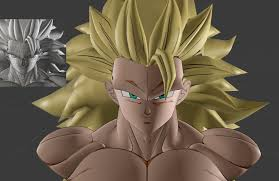

Arte y Sonido en los Videojuegos
Importancia del arte en los videojuegos
El arte en los videojuegos es la parte visual que da vida al mundo del juego. Incluye personajes, escenarios, objetos, efectos visuales y animaciones. Su objetivo es transmitir emociones, ambientar la historia y hacer que el jugador se sienta dentro del universo del juego.
El arte puede variar desde gráficos realistas de alta calidad hasta estilos más simples como pixel art o animación tipo caricatura. Lo importante es que el estilo visual sea consistente con la narrativa y la experiencia que se desea ofrecer al jugador.

En este modelo 3D se aplican técnicas de texturizado, sombreado e iluminación para resaltar los rasgos del personaje. Estos detalles visuales son clave para lograr una estética coherente con la narrativa y el tipo de juego que se desarrolla.
Áreas principales del arte
- Modelado 3D: creación de personajes, escenarios y objetos tridimensionales.
- Animación: dar movimiento a personajes, criaturas, cámaras y objetos.
- Diseño 2D: fondos, íconos, interfaz gráfica, ilustraciones y pixel art.
- Concept art: bocetos e ilustraciones que definen el estilo visual del juego.
- Texturizado e iluminación: añadir detalle, color y realismo a las superficies.
El papel del sonido
El sonido es fundamental para crear inmersión y atmósfera. Incluye música, efectos especiales, voces y ambientación. Un sonido adecuado intensifica la experiencia del jugador, genera tensión, emoción y realismo.
Los efectos sonoros pueden provenir de grabaciones reales, bibliotecas de audio o procesos digitales. La música puede ser instrumental, electrónica o incluso orquestal.
Herramientas comunes
- Blender y Maya para modelado y animación 3D.
- Aseprite y Photoshop para gráficos 2D y pixel art.
- FL Studio, Audacity y FMOD para creación y edición de audio.
- Adobe Illustrator y Krita para ilustración digital.
Objetivo general
El arte y el sonido trabajan juntos para crear una experiencia memorable, apoyando la jugabilidad y reforzando las emociones del jugador. Un buen diseño visual acompañado de un sonido adecuado puede convertir un juego sencillo en una experiencia inolvidable.